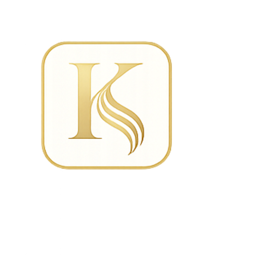

Alisado Japonés
Cabello afro / muy rizado
Resultado real de alisado Japonés en KISNA Madrid para cabello afro / muy rizado.

KISNAEXPERTO EN ALISADOVolver al inicioResultados reales
Cabello afro / muy rizado
Resultado real de alisado Japonés en KISNA Madrid para cabello afro / muy rizado.


pelo con mechas y muy dañado
Resultado real de alisado Keratina en KISNA Madrid para pelo con mechas y muy dañado.


Pelo grueso, muy encrespado y con mucho volumen
Resultado real de alisado Brasileño en KISNA Madrid para pelo grueso, muy encrespado y con mucho volumen.


Pelo con textura afro y muy seco
Resultado real de alisado Orgánico en KISNA Madrid para pelo con textura afro y muy seco.